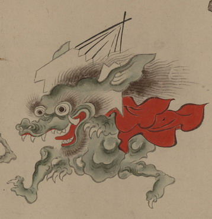

扇の化物。大きな耳の間に、大きな扇子を逆さまに立てている。鼻は鰐のようで、大きな口から牙が覗いており、二頭身の薄緑色の体に赤い衣を羽織っている。手足の爪は鋭い。
出典：親書誌：U426_nichibunken_0154：妖怪絵巻；ヨウカイエマキ／日付：2010／資源識別子：U426_nichibunken_0154_0073_0000
Copyright (c)2010- International Research Center for Japanese Studies, Kyoto, Japan. All rights reserved.